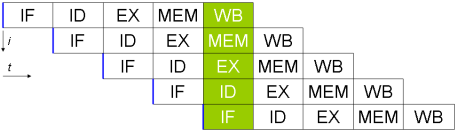
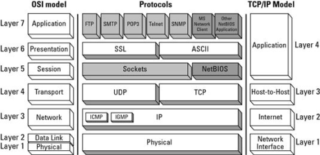
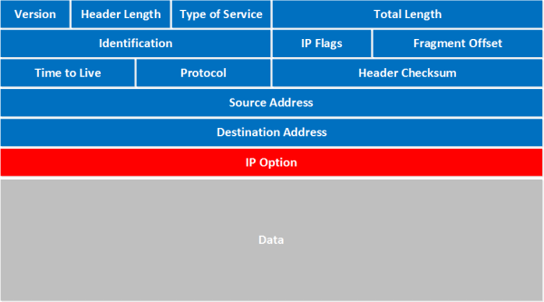
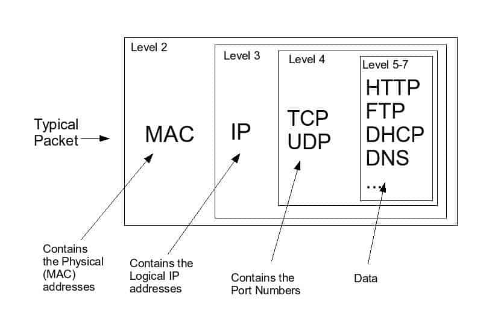
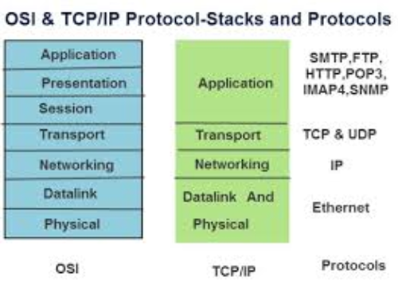
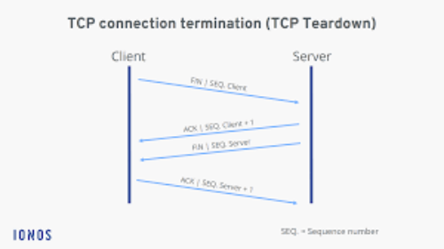
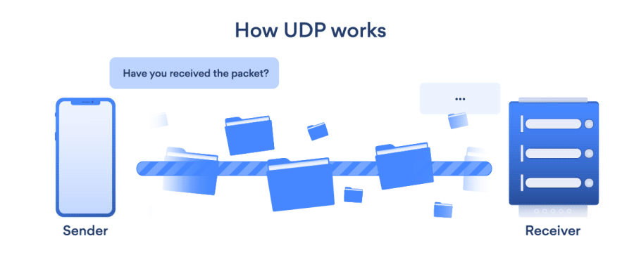

arkitekture notes
low level understanding
leksion 1
5- tipet kryesore te kompjuterave
1> PMD(personal mobile device
2> PC
3> server
4> Cluster
5> embedded
komponetet fizik
-i/o
-memory
ram
cache
hardrive
- datapath
- kontroll
hirerarkia e komljuterit
aplication
OS
compiler (unix:
Assembler windows 9x)
ISA(instruction Set Architecture)
processor | memory | I/O system
datapath & control
Digital Design
Circuit Design
transistor, IC layoutleksioni2
Leksioni 2
organizimi kompjuterik
Processor = datapath+CU(controll unit)
Cu = njesia e kontrollit ku dekodohen instruksionet dhe behet sekuencimi ne kohe i operacioneve
Datapath = ALU + register file+regiser te tj specifik
Performanca
Latency
Thrughtput or Bandwith
Clock perfaqesohet nga :
Perioda e clock = kohezgjatja e nje cikli
Frekuenca e clock = nr.i cikleve per seconde te nje periode
CPU Time = CPU Clock Cycles * Clock Cycle Time
Ligji i Amdah-lit
E shprehur matematikisht eshte : Speedup ( E ) = ________1__________
1-F+F/S
F – pjesa qe permiresohet
S – permiresimi qe aplikohet ne pjesen Fleksion 3
ISA (instruction set architecture)
bashkesia e instruksioneve qi i jepen porcesorit nga sistemi
ISA perbehet nga instrukisonet
Instruksioni duhet te tregoje:
• veprimet qe ai kryen (+/-etj)
• objektin qe do te operohet
• vendin ku do te vendoset rezultati
• vendin e instruksiont pasardhes per vazhdimin e prgramit
Regjistrat (memoria e porcesorit)
per te shmangur aksisimin e shpeshte te ram procesori perdor regjistrat ku ruan te dhenat
regjistrat jane 32 dhe 64 bit
Clock (cikel): nje komande e vetme
• Perioda e clock (kohezgjatja e clockut)
• Frekuenca e clock= numir i cikleve per sekonde
CPU time = nr cikleve * kohen e nje cikli
Procesori
Njesia e kontrollit (CU=central unit)
DataPath
DataPath
• regjistra
• blloku i regjistrave dhe te adresave
• ALU(arithmetikal logic unit)
• kujtesa e instruksioneve
BUS(lidhjet “fijet percjellese”)
Bandwidth
speed/latency
bandwidth Bps
speed herz
bus Width = nr i biteve per nje cikel
1
Bandwidth =------------------- * Bus Width
Latency
leksion 4
MEMORY && PIPELINING
Memory
“ te dhenat transemetohene ne nivelet me te aferta si dhe sasia qe trasmetothet quhet BLLOK (madhesia e blloqeve eshte fuqi e 2)”
parimi i lokacionit
• lokalitet ne kohe : nese nje e dhene eshte aksesuar ka porbabilitet qe te aksesohet serish
• lokalitet ne hapsire : nese nej e dhene eshte aksesuar ateher dhe te dhenat e tj afer saj do te aksesohen
Hierarkia e memories
sa me e > distanca nga procesori aq me shum rritet koha e aksesimit
sipas parimit e lokalitetit
ka 3 lloje memoriesh
| | kapaciteti | koha e
aksesimit |
|---|
| SRAM | 100KB | 0.5-5ns |
| DRAM | 100 MB | 50-70ns |
| Hard-Drive | 100GB | 5-20ns |
SRAM vs DRAM
6 tranzistore /qelize 1tranxistor /qelize
densitet i ulet desnitet i larte
aksesim i shpejte aksesim i ngadalet
CACHE
“runa te dhenat e perdorura se fundmi per per aksesim me te shpejte”
Cache ndodhet midis procesorit dhe memories kryesore ajo mban te dhena sipas parimit te lokalitetit
Cache ndahet ne nivele :
1- L1 - ndodhet ne porcesor
2- L2 - ndodhet midis ram dhe porcesor
Cache ndertohet nga SRAM
Hit vs Miss
Hit rate : perqindja e aksesimit te memories ne nivelin e siperm
Hit time : koha e aksisimit te hit rate dhe kohen e percaktimit nese blloku ekziston
Miss rate : 1 (Hit Rate)
Miss penality : koha e zevendesimit te nje blloku be 1 nivel me te larte si dhe koha e kalimit te nje blloku be procesor
pipelining
synini i pipelining eshte te permiresoje shpejtesine, kjo behete nepermjet ndryshimit e qasjes ndaj instruksioneve
PIPELINING eshte nje teknike implementimi ku instruksionet mbivendose gjate ekzekutimit
• menyra sekuenciale ( mbarovi nje bllok fillo tj)
• mbivendosja ( mbarovi instruksioni 1 i setit1 fillo instruksionin 1 te setit2)
pros & cons
me shume pune ne me pak kohe procesi ngadalesohet nga faza me gjate
PIPELINING TEK PORCESORET
Pese faza :
1- (IF) Instruction fetch
2- (ID) Instruction decode and register fetch
3- (EX) Execute
4- (MEM) Memory access
5- (WB) Register write back
Rreziqet
◇ Structural Hazards ( nuk ekzekuton 2 instruksione ne 1 cikel clock)
solutions
- STALL
- ndarja e memories ne DATA & Instruction memory
◇ Data Hazards (instruksione te ndryshme aksesojen rw te njejtin regjister)
solution
- forwarding
- bypass
◇ Control Hazards
pjeset fizike
leksioni 5
Paisjet I/O
paisjet I/O lidhen nepermjet Bus
proc/mem ⇔ I/O
I/O menaxhohen nga os nepermjet Drivers or Moduls
funksionet e moduls
◇ CONTROL & TIMING
◇ KOMUNIKIM ME cpu
◇ KOMUNIKIM M E I/O
◇ DATA BUFFERING
◇ ERROR CORRECT
komandat e CPU drejt modul
▪ KONTROLLI (Check device or activate, send insrtuction)
▪ TESTIMI (teston modulin dhe paisjen)
▪ LEXIMI DHE SHKRIMI (lexon nje info nga paisja dhe fut ne buffer ose e dergon ne paisje)
taktikat e I/O
1- programmed
2- Interupt driven
3- Direct Memory Access(DMA)
per detaje leksioni 5 slide 19leksioni 6
pj perberse te pc
Hardware
OS
Sys tools & services
Hardware
Tower
Rack mounted
Pjeset perberese
◇ Motherboard
◇ Procesoret
◇ Memoria
◇ Disk Drives
◇ Adapter cards
◇ Fans
Pjeset Periferike
Keyboards
Monitor
Mouse
etj etj
memory
Volatile dhe Non-volatile Memory
- Volatile Memory – kerkohet energji konstante, qe te ruhet
informacioni
- Non-volatile – NUK ka nevoje per energji konstante per ruajtjen e
informacionit. Pra edhe kur kompjuteri eshte i fikur, ai serish e ruan informacionin.
BIOS (basic I/O sys)
kjo pj eshte me shum per info teknike ne lidhje me OS
win tool & services
Ping – teston komunikimin me nje host
• Telnet – hyjme ne konfig.te nje host
• Msconfig – hyjme ne startup te PC
• Regedit – hyjme ne regjistrat e windows.
Nuk sugjerohet editimi I tyre, pervec rasteve te vecanta
• CMD – hyjme ne komand line te PC
CMD – Comand Line
Help – shfaq komandat
Ipconfig – shfaq IP qe
kemi marre
arp –a – shfaq IP/mac te
hosteve fqinje
ping x.x.x.x
Windows Tools & Services
per gjetjen e informacionit te faqeve te internetit
• Qe te mbajme nje faqe, bashke me emails, na duhen keto te dhena :
1. NS – Name Servers Nje server ne bote, ku do e HOSTOJME kete
faqe.
2. DOMAIN – emri i faqes. Kete e blejme kudo. Ne rastin tone eshte
AKEP. Akep na kerkon detyrimisht NSWindows Tools & Services
• Nslookup – shofim ku jane te ngritura REKORDET e nje faqeje
REKORDET – server ku mbahet nje sherbim (mail, web, etj)
• NS – Name Servers – CMD / set q=ns
• SOA – server of authority – CMD / set q=soa
• MX – mail exchanger – CMD / set q=mx
• PTR – ose reverse dns – CMD/ set q=x.x.x.x
Networking
ISO/OSI
• LAYER 7 (application)
• LAYER 6 (presentation)
• LAYER 5 (session)
• LAYER 4 (Transport)
• LAYER 3 (network)
• LAYER 2 (data link)
• LAYER 1 (physical)
le ti shpjegojme 1 nga 1
Layer 1 physical
shtresa fizike ose ndyrshe mund te cilesohet si ajo cka ne shohim ne nje network
kjo permban te gjitha paisjete fizike si kabujt portat e NIC dhe Switchave etj
Layer 2 data link
shtresa e lidhjes eshte ajo pjese ku sigurohet lidhja e paisjeve
ketu hyne mac adresat dhe eshte shtresa ku futet ne funksion shtresa logjike
LLC dhe MAC
NIC
1. LLC – Logical Link Control, eshte puna e pare qe ben NIC
Komunikon me OS, nepermjet Drivers te PC, dhe transmeton Data
nepermjet Protocols (c’jane protocols ?)
1. MAC – Media Access Control, eshte puna e dyte, qe konsiston ne
krijimin e Frames, dhe adresimin e tyre. Cdo Frame permban dy MAC
addresa (mac te kujt ?)
Layer 3 network
ne layer 3 kemi ate te cilen e quajme IP (internet Protokoll)
ne layer 3 ne shohim protokolle komunikimi te cilata mundesojne qe ne baze te disa rregullave te paracaktuara paisjet te shkembejne te dhena
si shembull ne layer 3 ne kemi ICMP (Internet Control Message Protocol) i cili eshte protokolli pergjegjes per te te kontrolluar nese 2 paisje mund te shkembejne te dhene mes tyre apo jo . si dhe ne Layer 3 ne shohim PAKETAT
Layer 4 transport
layer 4 eshte shtresa ku ndodh shkembimi i paketave sipas protokolleve dhe rregullave te paracaktuara nga protokollet
segmetimi dhe riasemblimi
Layer 5 session
layer 5 eshte shtresa qe siguron se komunikimi ne shtresat me poshte eshte bere sipas rregullave te paracaktuara apo jo
kontrollon menaxhon dhe mbyll connection
Session
Layer 6 presentation
SSL TSL data maipulation and stuff
Layer 7 application
eshte shtresa me e perkshme nga UI/UX
eshte shtresa ku shumica e applikacioneve marrin inputet dhe shfaqin te dhenat mbi baze te shtresave me posjt
me pak fjale shtresa 7 eshte shtresa ku info eshte naked sikur e ja kemi dhene pc
paketa
Paketat
paketat jane njesi te vogla informacione qe perdoren nga paisjet per te komunikuar midis tyre ne rrjet .
paketat perbehen nga 3 pjese kryesore :
1. HEADER ose koka e paketes
2. PAYLOAD ose mesazhi i paketes
3. TAILER ose firma/vula e pakets
 paketa gjithashtu eshte prezantuesja me e mire e ISO OSI layers
ketu ne kete imazh duket qarte se si ndosh i gjithe komunikimi dhe pershkruan te gjithe kete leksion
ip
IP (internet protokoll)
ip kemi 2 versione ip IPv4 dhe IPv6
si dhe kemi 2 loj IP lokale dhe remote
IPv4 Ip qe ne do te studiojme
-32 bit gjatesi ose 4 oktete nga 0 ne 255 ne decimal
00000000.00000000.00000000.00000000 - binary
192.168.1.0 -decimal
ip i ndajme ne subnets per te treguar se kujt grupi(KLASE) i perket kjo IP
klasat e ip
| Class | Leading
bits | Size of network
number bit field | Size of rest
bit field | Number
of networks | Addresses
per network | Total addresses
in class | Start address | End address |
|---|
| Class A | 0 | 8 | 24 | 128 (27) | 16,777,216 (224) | 2,147,483,648 (231) | 0.0.0.0 | 127.255.255.255 |
| Class B | 10 | 16 | 16 | 16,384 (214) | 65,536 (216) | 1,073,741,824 (230) | 128.0.0.0 | 191.255.255.255 |
| Class C | 110 | 24 | 8 | 2,097,152 (221) | 256 (28) | 536,870,912 (229) | 192.0.0.0 | 223.255.255.255 |
| Class D (multicast) | 1110 | not defined | not defined | not defined | not defined | 268,435,456 (228) | 224.0.0.0 | 239.255.255.255 |
| Class E (reserved) | 1111 | not defined | not defined | not defined | not defined | 268,435,456 (228) | 240.0.0.0 | 255.255.255.255 |
Class A
0. 0. 0. 0 = 00000000.00000000.00000000.00000000
127.255.255.255 = 01111111.11111111.11111111.11111111
0nnnnnnn.HHHHHHHH.HHHHHHHH.HHHHHHHH
Class B
128. 0. 0. 0 = 10000000.00000000.00000000.00000000
191.255.255.255 = 10111111.11111111.11111111.11111111
10nnnnnn.nnnnnnnn.HHHHHHHH.HHHHHHHH
Class C
192. 0. 0. 0 = 11000000.00000000.00000000.00000000
223.255.255.255 = 11011111.11111111.11111111.11111111
110nnnnn.nnnnnnnn.nnnnnnnn.HHHHHHHH
Class D
224. 0. 0. 0 = 11100000.00000000.00000000.00000000
239.255.255.255 = 11101111.11111111.11111111.11111111
1110XXXX.XXXXXXXX.XXXXXXXX.XXXXXXXX
Class E
240. 0. 0. 0 = 11110000.00000000.00000000.00000000
255.255.255.255 = 11111111.11111111.11111111.11111111
1111XXXX.XXXXXXXX.XXXXXXXX.XXXXXXXX private networks
10.0.0.1 - 10.255.255.255
172.16.0.0 - 172.32.255.255
192.168.0.0 - 192.168.255.255
special adresses
| 127.0.0.0 | Loopback address (the host’s own interface) |
|---|
| 224.0.0.0 | IP Multicast |
| 255.255.255.255 | Broadcast (sent to all interfaces on network) |
=====================================================================
protokollet
protokollet
protokollet nuk jane gje tj vec se rregual qe tregojene se si paketat do transmetohen dhe manipulohen
protokollet i shohim ne te gjitha shtresat e ISO OSI
por kryesisht network protocols i shohim ne layer 3 ku fillojme me IP
protokollet i mund te kombinohen per te formuar komunikim psh tcp/ip
(nje shpjegim 100% i vertet ) protokollet kombinohen sipas layers psh layer 4 me 3 qe nje e dhene te dergohet
nga nje sercvice ne rrjet ajo duhet te zbrese nga lart poshte ne layers dhe duke zbritur duke u enkapsuluar me
detajet e seciles shtrese ex: ne layer 4 merr TCP pastaj ne layer 3 merr sorce ip.
ne do te shpjegojem protokollet me te perdorura
IP, TCP dhe UDP
IP referoju
ip TCP transmision control protokoll
UDP
{kind=link}
{kind=link}